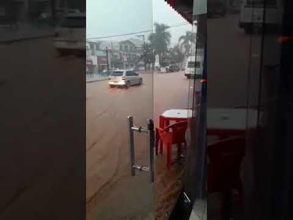

O APOEMA tem como objetivo ajudar motoristas em situações de risco , caudas por temporais e chuvas ,não se precupe estaremos ao seu lado , com as melhores informaões e sugestões para poupar os danos materias e salvando vidas!.
Rua Pitangui alagada!

Ações sugeridas
Na região leste é composta por varios morros e comunidades , o ato de tentar correr para esses locais não é muito aconselhado, por isso siga nossas açoes sugeridas.
Outros locais afetados
Desvios Sugeridos